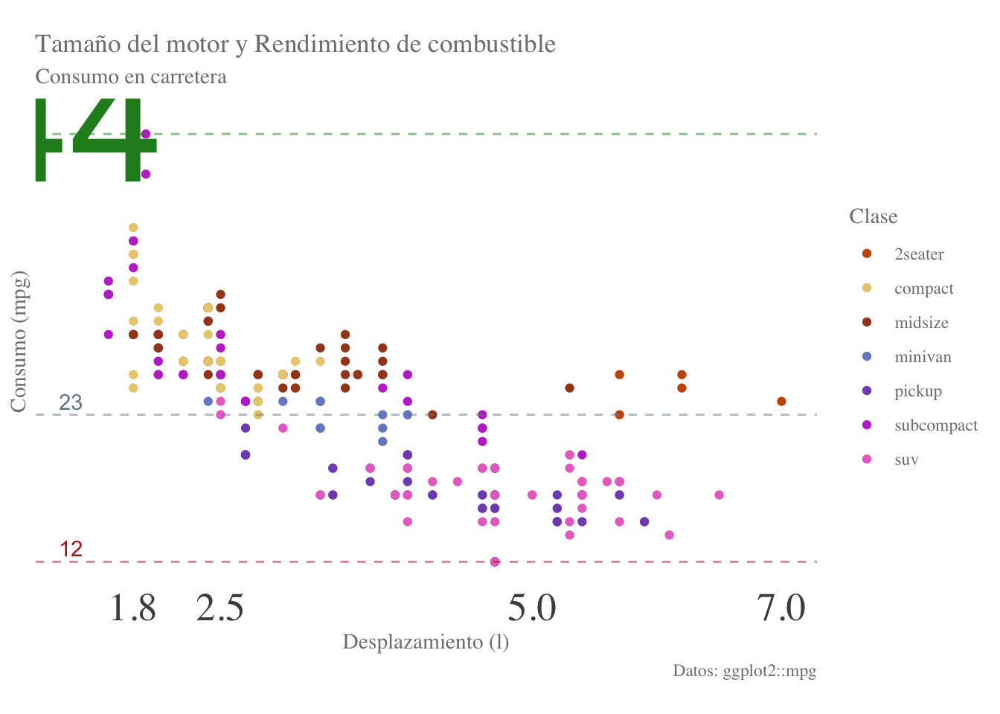

library(ggplot2)
df1 <- ggplot2::mpg
df15 Principios de visualización de datos y ggplot2
5.1 Representaciones de la realidad
Como seres humanos, con una tendencia a encontrar el camino que ofrezca una menor resistencia (otra forma de decir que somos flojos), usualmente resumimos una realidad altamente compleja utilizando distintas estrategias. Si yo te pido que me digas “qué es una orca” puedes darme una descripción textual del tipo “las orcas son mamíferos del orden Cetartiodactyla”, una descripción numérica en forma de mediciones (Longitud: 6-8 m) o medidas de tendencia central/dispersión (Peso máximo: 5.5 toneladas), pero usualmente preferimos medios audiovisuales como un dibujo, un video o, en el caso de la investigación y el tema principal de hoy, gráficos.
5.2 Visualización de datos

Tenemos una gran variedad de razones y objetivos para los cuales necesitamos o recurrimos a visualizaciones de datos (solo visualizaciones a partir de aquí), algunas de ellas son:
- Explorar nuestros datos
- Elaborar reportes con nuestros análisis
- Comunicar hallazgos gráficamente
- Soportar resultados en una publicación
- Presentar a un público no especializado
Important
Independientemente de para qué hagamos la visualización, lo cierto es que es algo que merece mucha dedicación y que, en realidad, va más allá de hacer un simple gráfico: la visualización de datos nos permite contar una historia.
Si obviamos no tenemos cuidado al hacer nuestras visualizaciones procedimiento podemos terminar con un gráfico como el siguiente:
Statistica¿Qué tiene de malo y cómo podemos mejorarlo? Esa es la pregunta que vamos a responder en esta sesión, replanteándola como ¿qué debo tener en cuenta para hacer una buena visualización?, y para lo cual seguiremos algunas heurísticas que nos ayudarán a ser conscientes de qué elementos incluiremos en el gráfico y cuáles no.
Note
¿Qué es una heurística? Es una guía que vamos a seguir hasta que encontremos algo mejor; es decir, las recomendaciones que vamos a revisar son, al final del día, eso: recomendaciones. No tienes ninguna obligación de seguirlas, ni mi objetivo es imponer estas ideas, sino hacer que seas consciente de todo lo que implica una visualización de datos.
5.2.1 Cairo y su rueda
La primera heurística que vamos a revisar es la rueda de Cairo (2012). Alberto es una de las figuras más relevantes en el área de la visualización de datos, y una de las muchas heurísticas que propone es considerar la siguiente rueda:
Esta rueda no es una guía tal cual, sino más bien una herramienta que nos permite evaluar las compensaciones que debemos hacer al realizar nuestras visualizaciones. La rueda nos muestra seis ejes que hacen referencia a distintas características de una visualización:
- Abstracción-Figuración: Este primer eje refiere a qué tipo de gráfico estamos utilizando. ¿Tenemos un gráfico abstracto como un gráfico de barras, dispersión, etc.? O, por el contrario, tenemos un dibujo que describe exactamente el proceso (gráfico figurativo).
- Funcionalidad-Decoración: Esta es bastante auto-explicativa, y hace referencia a qué tantos elementos decorativos forman la visualización.
- Densidad-Ligereza: Refiere al número de elementos que conforman la visualización o, en otras palabras, a qué tan cargado está nuestro gráfico.
- Dimensionalidad: Refiere al número de variables que se incluyen en el gráfico o, puesto de otra forma, a cuántas partes de la historia queremos narrar con un mismo gráfico. No es lo mismo hacer un gráfico de dispersión en el que los puntos sean todos del mismo color a hacer uno donde los puntos estén coloreados según una tercera variable.
- Originalidad-Familiaridad: Refiere a si los elementos utilizados son familiares para el observador o son elementos nuevos. Una forma fácil de entender este eje es poner lado a lado un gráfico de frecuencias y un gráfico de densidad. Ambos cumplen con el mismo objetivo (uno es más adecuado para variables continuas), pero es bastante probable que los gráficos de frecuencias te sean más familiares.
- Redundancia-Novedad: Referente al número de elementos que ayudan a soportar una misma parte de la historia. Un ejemplo sería tener un gráfico de frecuencias para distintas clases, donde cada barra tiene un color distinto (como en la Figure 5.7). Ahí tanto las clases en el eje x como el color de las barras nos indican que son cosas diferentes.
Si analizamos un poco la distribución de las características, los gráficos que tiendan más a estar en la mitad superior de la rueda son más complejos y profundos que los de la parte baja. De hecho, el mismo Cairo menciona que los científicos e ingenieros prefieren una rueda como esta:
Mientras que los artistas, diseñadores gráficos y periodistas preferirían una esta otra:
¿Esto quiere decir que forzosamente debamos de hacer gráficos abstractos, con muchos elementos “originales” pero mínimas decoraciones, que representen múltiples variables y que no sean redundantes? PARA NADA. Recuerda, esto es solo una heurística, y el hacia dónde te inclines en cada eje dependerá de qué objetivo tengas con tu visualización, a quién vaya dirigida e, incluso, en qué medio va a ser observada.
5.2.1.1 Minard y la (fallida) invasión Napoleónica
Para cerrar con esta heurística házme un favor y observa con atención el siguiente gráfico:
Evidentemente es un gráfico muy cargado de información, pero es también considerado por muchos como la “mejor visualización que se ha creado”. ¿Cuántos elementos lo conforman y qué parte de la historia cuentan?
5.2.2 Tufte y sus tintas
Ahora hablemos de una heurística propuesta por una de las figuras seminales en la visualización de datos: Edward Tufte. Él propone que una buena visualización debería tener una alta proporción de tinta de datos a tinta total (Tufte, 1983), donde la tinta de datos es la tinta gastada para imprimir el núcleo del gráfico; es decir, la información mínima necesaria para transmitir el mensaje, mientras que la tinta total es, como el nombre sugiere, la cantidad de tinta empleada para imprimir el gráfico completo. ¿Qué implica una alta proporción de tinta de datos a tinta total? Que reduzcamos lo más posible el número de elementos en el gráfico.
5.2.2.1 Darkhorse Analytics: Data looks better naked
Para esta parte sigamos el ejemplo de Darkhorse Analytics, en el cual se mejora la siguiente figura:
El gráfico así como está presentado puede encajar en mayor o menor medida con tus gustos, pero lo cierto es que es un gráfico con una gran cantidad de elementos. Bajo la heurística de las tintas de Tufte quitar es mejorar, así que vayamos elemento a elemento. El primero es el color de fondo. No entraré en el debate de si el color es bonito o no, sino más bien quiero que te preguntes ¿qué me dice el color de fondo sobre lo que se está graficando? La respuesta es: nada; por lo tanto, hay que eliminarlo:
El siguiente elemento son, en realidad, varios. La visualización muestra el número de calorías por 100g de distintos alimentos. Eso aparece repetido en el título, el título del eje x, el título del eje \(y\) y, tal vez de forma menos obvia, en la acotación de colores y las etiquetas del eje x. ¿Qué hacer? Una posible solución Es reducir el título a “calorías por 100g”. ¿100 g de qué? de lo que tenemos en las etiquetas del eje x. Esto nos permite no solo reducir el texto en el título, sino también eliminar los títulos de ambos ejes y la acotación:
Ya “adelgazamos” nuestro gráfico, pero aún podemos continuar. El siguiente elemento son las cuadrículas que delimitan el área del gráfico y el área de graficado. Nuevamente la pregunta es ¿nos dicen algo sobre las calorías de los alimentos? Y nuevamente la respuesta es no. Aunado a esto, desde un punto de vista psicológico, el tener esas delimitaciones puede “limita” la imaginación del observador. Estés o no de acuerdo con este último punto, no cambia el que no aportan nada, así que podemos quitarlas:
Puede que estés pensando que hasta este punto ya eliminamos muchas cosas, pero aún hay un par de elementos más. El primero son los colores de las barras. Al igual que la acotación son un elemento redundante que manda el mensaje de que estamos tratando con cosas diferentes, pero eso ya está definido claramente en el eje x. En este caso sería más interesante resaltar alguna categoría en particular, tal vez para responder a la pregunta ¿qué tan calóricos son estos alimentos en relación al tocino?, lo que nos permitiría resaltar al tocino en rojo si ponemos a las demás en un color “neutro” como el gris:
¿Esto es todo? Aún no. Tenemos en las barras un elemento derivado de las décadas de los 80s-90s cuando se masificó el uso de las computadoras y los modelos tridimensionales: las sombras y el volumen de las barras. Realmente no aportan nada a la narrativa, sino que solo “cargan” más el gráfico, así que también las eliminamos:
En este punto hay algo que destaca tanto o incluso más que las barras: el texto del título y de las etiquetas del eje \(y\). Evidentemente no podemos eliminarlos porque ya no sabríamos qué es lo que representa el gráfico, pero lo que sí podemos hacer es cambiar las negritas por gris claro, con lo cual cambiamos el punto de anclaje de la figura a la barra roja con el tocino:
Ahora ya estamos muy cerca, pero hay algo que se ve fuera de lugar. Ese “algo” está relacionado con el eje \(y\): las etiquetas y las líneas guía. En este punto seguramente me dirás “si quitamos esos elementos ya no vamos a saber”qué tanto es tantito” o cuántas calorías tiene cada cosa”, y tendrías la razón, pero podemos sustituirlo poniendo directamente el número de calorías por 100g de cada alimento sobre su barra, lo cual resulta en un gráfico no solo más simple sino también más preciso:
Si comparas esta última visualización con la Figure 5.7 notarás que hubo un cambio notable. El gráfico nuevo es más simple, más fácil de leer e incluso más preciso que el primero, con todo y que tiene muchos menos elementos.
¿Con esto quiero decir que siempre debamos de tomar esta aproximación minimalista? No, para nada. De hecho, hay casos en los cuales el tener muchos elementos visuales puede ayudar a llamar la atención del lector, a expensas de la precisión del gráfico. Tomemos el siguiente ejemplo:
Ambos gráficos presentan exactamente la misma información, pero estarás de acuerdo conmigo en que el dibujo con el monstruo es mucho más llamativo que el simple gráfico de barras, lo cual lo hace más adecuado para el medio en el que fue distribuido: una revista/periódico. Evidentemente no es compatible con una publicación científica, pero si presentas el segundo gráfico es bastante probable que la gente no voltee a verlo.
5.2.3 Cairo y sus principios
Esta siguiente heurística también fue propuesta por Cairo, y son cinco sencillos principios que debemos de seguir para llevar a una visualización altamente efectiva. El primero es el principio de funcionalidad, en el que los elementos del gráfico deben de ayudar a transmitir la historia que estamos contando. Volvamos a la Figure 5.7. Las barras, sus colores y la acotación eran funcionales, pero no lo eran el color del fondo o las cuadrículas de graficado.
El segundo principio es el de veracidad. Este es auto-explicativo, pero es posiblemente el más importante de todos: que los datos presentados sean veraces, y que sean presentados de una forma veraz o, en otras palabras: NO CUCHAREAR DATOS NI SU APARIENCIA. Ejemplos de visualizaciones donde este principio no se cumple abundan en los medios de comunicación, algunas veces sin que sea el objetivo, pero muchas otras intencionalmente para forzar una narrativa. Un caso particular es la Figure 5.16, en donde tenemos el gráfico presentado en los medios de comunicación durante las elecciones entre Nicolás Maduro y Henrique Capriles. En apariencia la diferencia en votos era gigantesca, acrecentado no solo por la diferencia de alturas de los cilindros, sino también por ser figuras tridimensionales. Si los seres humanos somos malos juzgando áreas (razón por la que no se recomienda hacer gráficos de pastel), somos peores aún juzgando volúmenes.
Volviendo a la diferencia de alturas, aquí hay una “trampa” más: el eje \(y\) se encuentra truncado. ¿Qué tanto? Lo suficiente para que una diferencia de 1.59% se vea como una ventaja abrumadora de Maduro sobre Capriles. ¿Cómo se vería el gráfico si se presentara de forma veraz? Bastante menos dramático, eso es seguro:
Recuerda: no porque estemos contando una historia tenemos porque forzar una narrativa o solo mostrar lo que nos conviene. Nuevamente, ejemplos como este abundan en los medios de comunicación, y aquí puedes ver algunos otros.
El tercer principio es el de belleza. También es autoexplicativo: que el gráfico sea “bonito”. El problema con este principio es que es sumamente subjetivo. Lo que puede ser bonito para mi puede no serlo para ti, y viceversa, pero podemos valernos de las dos heurísticas anteriores para llegar a un gráfico que sea atractivo y, sobre todo, legible.
Si estos tres principios se cumplen y van de la mano, llegamos de forma automática al cuarto: el principio de comprensibilidad. Cairo menciona que una visualización comprensible es aquella que permite que el lector/observador pueda ver el gráfico, analizarlo y que pueda tener un momento de “¡EUREKA!”, sin que nosotros describamos el gráfico.
5.2.4 Del dicho al hecho hay mucho trecho
Estas son algunas de las consideraciones más básicas que debemos de tener al realizar una visualización de datos, pero no son las únicas. Te recomiendo leer el artículo de Rougier, Droettboom & Bourne (2014), el cual tiene otras guías para mejorar nuestras figuras. Ahora bien, una cosa es conocer la teoría, pero de nada sirve si no podemos llevarlo a la práctica, y es aquí donde entra ggplot2.
5.3 Introducción a ggplot2
Recordarás de las primeras sesiones que un componente muy importante de R es la realización de gráficos, lo cual quiere decir que R base nos permite realizar visualizaciones de datos. De hecho, el graficador por defecto es sumamente potente, pero desafortunadamente no es precisamente intuitivo. En este sentido, la librería ggplot2 es una (¿mejor?) alternativa en la que los gráficos se crean de manera declarativa, y está basada en el libro “Grammar of Graphics” (Wilkinson, 2005). Digo “¿mejor?” porque, como en todo, es una cuestión de gustos y costumbre; sin embargo, pedagógicamente es bastante amable. La creación de gráficos se realiza mediante capas, donde tenemos nuestros datos, en un data.frame, luego indicamos qué queremos que grafique y en dónde, luego cómo queremos que lo grafique, y luego cómo queremos los demás elementos. En código tendríamos algo así:
```{r}
ggplot(data = datos, aes(x, y)) + geom_*() + ...
```Podría explicarte qué es cada cosa aquí, o podemos mejor aprender haciendo y crear una visualización. Antes de comenzar una visualización es necesario saber qué queremos responder con ella. En este caso, utilizaremos la base de datos mpg incluída en ggplot2. El primer paso es, entonces, conocer la información que contiene. Para ello guardaremos la base en una variable que llamaremos df1:
Una manera rápida de tener una idea de cómo está dispuesta una base de datos es utilizando la función head(var). Esta nos mostrará solo las primeras instancias (renglones) del data.frame que estemos analizando. En la tabla inferior podemos ver que se trata de una base de datos sobre automóviles y que las columnas representan: el fabricante, el modelo, el desplazamiento de combustible (litros), el año del modelo, el número de cilindros, el tipo de transmisión, el tipo de tracción, los consumos en ciudad y autopista (en millas por galón, mpg), el tipo de combustible que utilizan y la clase a la que pertenencen. También nos plantearemos el objetivo de eliminar la mayor cantidad de elementos posibles hasta solo tener el esqueleto y de ahí agregar algunos elementos que favorezcan la interpretación.
head(df1)5.3.1 ggplot() + ...
A partir de esta información podemos tratar de responder si existe una relación apreciable entre el consumo de combustible (por ejemplo en autopista) y el desplazamiento del motor, considerando la clase del vehículo. Para atender a esta pregunta utilizaremos un gráfico de dispersión, con el desplazamiento en el eje x, el consumo en el eje \(y\) y la clase indicada por los colores de los puntos. Ahora que tenemos claro qué queremos visualizar y cómo lo vamos a visualizar podemos empezar a graficar. El primer paso es inicializar el espacio de graficado con la función ggplot() y pasarle los parámetros estéticos utilizando la función aes(x, y, colour). Es importante mencionar que en este momento aparecerá únicamente el espacio de graficado en blanco. Esto es normal, ya que únicamente definimos el “qué”, pero no el “cómo”.
ggplot(data = df1, aes(x = displ, y = cty, colour = class))
Ya que inicializamos el espacio gráfico podemos agregar la información que nos interesa. Para facilitar la construcción paso a paso y evitar el repetir código innecesariamente podemos almacenar la gráfica completa en una variable (por ejemplo plot2) e ir añadiendo capas (operador +) posteriormente. Para ver un gráfico guardado en una variable simplemente hay que llamar a esa variable. La primera capa que agregaremos será la que indicará el tipo de gráfico que deseamos (nombrados como geom_*), en este caso un gráfico de dispersión:
plot1 <- ggplot(data = df1, aes(x = displ, y = hwy, colour = class)) +
geom_point()
plot1 # Imprime el gráfico
Ahora sí tenemos la información que necesitamos y podríamos comenzar a describir el gráfico, pero en realidad hay demasiados elementos que son innecesarios y otros que son poco informativos en su estado actual (etiquetas de ejes), entonces trabajemos uno por uno. Para modificar las etiquetas de los ejes podemos utilizar las funciones xlab() y ylab() como capas separadas; sin embargo, podemos modificar todas las etiquetas y títulos en un mismo paso utilizando la función labs(title, x, y, caption, colour, ...).
plot2 <- plot1 + labs(x = "Desplazamiento (l)",
y = 'Consumo (mpg)',
colour = 'Clase',
title =
'Tamaño del motor y Rendimiento de combustible',
subtitle = 'Consumo en carretera',
caption = 'Datos: ggplot2::mpg')
plot25.3.2 Tema de ggplot2
Ahora que está claro cuáles son las variables que estamos mostrando podemos empezar a modificar la estética. Recordemos que debemos mantener la relación datos/tinta lo más alta posible, y uno de los elementos más prevalentes del gráfico es el fondo gris con todo y cuadrículas. Para modificar esos elementos tenemos que modificar el “tema” de la gráfica, que no es otra cosa mas que utilizar una función que nos permita modificar en una sola línea la estética general del gráfico. Los temas se encuentran señalados con el nombre theme_*. Probemos con theme_minimal():
plot2 + theme_minimal()
Logramos eliminar el fondo gris y de paso las “espinas” (líneas de los ejes) y ahora el gráfico está en mucho mejor condición para ser presentado; sin embargo aún podemos ir más lejos. El objetivo de esta gráfica no es ver los detalles precisos de la información, si no extraer la información más relevante, por lo que la cuadrícula es un elemento que no aporta nada a la visualización. Para retirarla utilizaremos la función theme(), la cual permite modificar el aspecto de todos los elementos del gráfico. En realidad, las funciones theme_*() son aplicaciones de theme() con diferentes valores por defecto, por lo que podemos replicar el efecto de theme_minimal() e incluir otras modificaciones. Otra función muy útil para este procedimiento es la función element_blank(), la cual le indica a ggplot2 que no debe mostrar ese elemento. Otra cuestión importante que debemos de considerar es la relación de aspecto. Debido a que esta puede modificar enormemente la percepción de los datos, su selección no es algo trivial. En general, la proporción áurea (1:1.61) es un buen punto de partida y en series de tiempo es la proporción que menos deforma los datos. Una proporción cuadrada tiene sentido únicamente en aquellos casos en los que ambos ejes tengan la misma magnitud de variación y procuraremos que el eje más largo sea aquel con la variación más pequeña. En este caso, la variación del eje \(y\) (5 a 45) es mucho mayor que la del eje x (1.5 a 7), por lo cual una proporción cuadrada no sería una buena alternativa. En su lugar, utilicemos la proporción áurea. El último elemento que eliminaremos aquí son las marcas de los ejes, ya que realmente no aportan demasiada información.
plot2 <- plot2 +
# Eliminamos la cuadrícula menor
theme(panel.grid.minor = element_blank(),
# Eliminamos la cuadrícula mayor
panel.grid.major = element_blank(),
# Eliminamos el color de fondo
panel.background = element_blank(),
# Eliminamos las líneas de los ejes
axis.line = element_blank(),
# Eliminamos la leyenda
legend.key = element_blank(),
# Cambiamos la relación de aspecto
aspect.ratio = 1/1.61,
# Eliminamos las marcas de los ejes
axis.ticks = element_blank()
)
plot25.3.3 Personalizar los ejes
Ahora que nos deshicimos del fondo, la cuadrícula y las líneas y marcas de los ejes podemos trabajar en los valores de los ejes. Una de las mejores maneras de hacerlo es utilizando las funciones scale_x_*() o scale_y_*(), sustituyendo el * por continuous o discrete dependiendo del tipo de variable con el que estemos trabajando. En este caso, eliminaremos por completo las marcas del eje \(y\) y dejaremos únicamente los desplazamientos más comunes en el eje x.
plot2 <- plot2 + scale_x_continuous(breaks = c(1.8, 2.5, 5, 7)) +
scale_y_continuous(breaks = NULL)
plot25.3.4 Añadir líneas de referencia
Ahora que nos deshicimos de los valores del eje la gráfica ya no es entendible debido a que no sabemos cuál es la orientación o la escala de los datos. Una alternativa es añadir un par de líneas de referencia. Esto lo haremos con la función geom_hline(), la cual nos permite añadir líneas horizontales a través de todo el gráfico que cruzan al eje \(y\) en una posición que nosotros determinamos:
# Valores de referencia como el mínimo, la media y
# el máximo de los consumos
refs <- c(round(min(df1$hwy),0),
round(mean(df1$hwy),0),
round(max(df1$hwy),0))
# Líneas de referencia, una verde para el mejor consumo,
# una gris para el consumo promedio y una roja para el peor consumo
plot2 <- plot2 + geom_hline(yintercept = refs[1],
colour = 'firebrick', alpha = 0.5,
linetype = 'dashed') +
geom_hline(yintercept = refs[2],
colour = 'lightslategrey', alpha = 0.5,
linetype = 'dashed') +
geom_hline(yintercept = refs[3],
colour = 'forestgreen', alpha = 0.5,
linetype = 'dashed')
plot2Ahora el gráifico ya cuenta nuevamente con un sentido de dimensión, pero no tenemos los valores de referencia, entonces habrá que poner esas anotaciones con la función geom_text(), utilizando como valores de posición en y los mismos que las líneas de referencia + un pequeño valor:
# Líneas de referencia con los mismos colores
plot2 <- plot2 + annotate('text', x = 1.3, y = refs[1]+1,
label = as.character(refs[1]),
colour = 'firebrick') +
annotate('text', x = 1.3, y = refs[2]+1,
label = as.character(refs[2]),
colour = 'lightslategrey') +
annotate('text', x = 1.3, y = refs[3]+1,
label = as.character(refs[3]),
colour = 'forestgreen')
plot2
Con esta última modificación terminamos de explorar algunas de las funciones más básicas e importantes para personalizar los elementos que más impactan en una visualización, pero antes de terminar de discutir este punto me gustaría terminar el objetivo que nos propusimos al inicio de sacar información de la gráfica. En general, existe una tendencia a que el consumo de combustible incremente conforme incrementa el desplazamiento, lo cual es de esperarse, ya que el desplazamiento es una medida de el volumen máximo de combustible que puede entrar al motor en un momento dado; sin embargo, podemos también observar que, independientemente del desplazamiento, las SUVs y pickups tienden a tener los peores rendimientos de combustible, mientras que los subcompactos tienden al otro extremo. Podemos también analizar a los vehículos de dos plazas y ver que aún cuando tienen desplazamientos altos, sus rendimientos son mejores que los de las SUVs.
5.3.5 Conclusión y ejercicio
En cuanto a la parte visual, se podría argumentar que esta visualización final no es tan precisa como la primera, que algún elemento podría embellecerse, o que podriamos eliminar la leyenda y poner etiquetas de texto en algunos puntos para indicar las clases. Todos estos argumentos y muchos otros serían válidos ya que la estética es algo subjetivo; sin embargo, las decisiones que tomemos deberán estar en función del medio de distribución de la visualización (no es lo mismo una página web que en un medio impreso, por ejemplo) y sobre todo del público objetivo. Esta visualización en particular funciona para los fines didácticos que tenía en mente, es adecuada para una presentación de resultados de manera electrónica como este video, pero no es una visualización adecuada para una publicación científica. Arreglar eso será tu ejercicio para esta sesión.
Para finalizar con el objetivo principal de la clase te presento la visualización inicial y la final, una junto a la otra, para ver en dónde comenzamos, dónde terminamos y cómo llegamos hasta aquí. También te sugiero revises y descargues el PDF de esta página, que es un acordeón donde se encuentran los gráficos y funciones más comunes. Más adelante revisaremos algunos de ellos pero es un recurso que vale la pena tener a la mano.

5.3.5.1 Gráfico final
Y también el código necesario para el gráfico final, todo en un solo bloque de código.
# Valores de referencia para utilizar en la gráfica
refs <- c(round(min(df1$hwy),0), # Valor mínimo = peor consumo
round(mean(df1$hwy),0), # Valor promedio
round(max(df1$hwy),0)) # Valor máximo = mejor consumo
# Objeto con todos los pasos para llegar a la gráfica final
# Inicializamos el espacio gráfico
final.plot <- ggplot(data = df1, aes(x = displ, y = hwy,
colour = class)) +
# Gráfico de dispersión
geom_point() +
# Establecemos los títulos, subtítulos y un pie de foto
labs(x = 'Desplazamiento (l)',
y = 'Consumo (mpg)',
colour = 'Clase',
title = 'Tamaño del motor y Rendimiento de combustible',
subtitle = 'Consumo en carretera',
caption = 'Datos: ggplot2::mpg'
) +
#Eliminamos la cuadrícula menor
theme(panel.grid.minor = element_blank(),
#Eliminamos la cuadrícula mayor
panel.grid.major = element_blank(),
#Eliminamos el color de fondo
panel.background = element_blank(),
#Eliminamos las líneas de ejes
axis.line = element_blank(),
#Eliminamos el fondo de la leyenda
legend.key = element_blank(),
#Establecemos la rel. de aspecto
aspect.ratio = 1/1.61,
#Eliminamos las marcas de los ejes
axis.ticks = element_blank(),
#Cambiamos el tipo de letra
text = element_text(family = 'Times',
colour = 'gray50')
) +
# Reducimos las divisiones del eje ex a 4 valores
scale_x_continuous(breaks = c(1.8, 2.5, 5, 7)) +
# Eliminamos las divisiones del eje $y$
scale_y_continuous(breaks = NULL) +
# Añadimos una línea roja en el peor consumo
geom_hline(yintercept = refs[1],
colour = 'firebrick', alpha = 0.5,
linetype = 'dashed') +
# Añadimos una línea gris en el consumo promedio
geom_hline(yintercept = refs[2],
colour = 'lightslategrey', alpha = 0.5,
linetype = 'dashed') +
# Añadimos una línea verde en el mejor consumo
geom_hline(yintercept = refs[3],
colour = 'forestgreen', alpha = 0.5,
linetype = 'dashed') +
# Etiqueta del peor consumo
annotate('text', x = 1.3, y = refs[1]+1,
label = as.character(refs[1]),
colour = 'firebrick') +
#Etiqueta del consumo promedio
annotate('text', x = 1.3, y = refs[2]+1,
label = as.character(refs[2]),
colour = 'lightslategrey') +
# Etiqueta del mejor consumo
annotate('text', x = 1.3, y = refs[3]+1,
label = as.character(refs[3]),
colour = 'forestgreen')
final.plot5.3.6 Extras
Aunque estas modificaciones no necesariamente forman parte del proceso necesario para la visualización que era de nuestro interés, sí que son rutinarias, por lo que vale la pena echarles un ojo.
5.3.6.1 Colores de puntos
Modificar los colores de los puntos. Podemos utilizar la función randomColor(n) de la librería con el mismo nombre. Esta función solamente recibe el número de colores que queremos y los generará de manera aleatoria:
aleat <- randomcoloR::randomColor(7)
final.plot + scale_color_manual(name = "Clase", values = aleat)
Podemos también especificar una paleta predefinida, utilizando la capa scale_color_brewer():
final.plot + scale_color_brewer(type = "seq", palette = "Paired")Otra opción es directamente pasar un vector con los nombres de los colores que sean de nuestro interés:
color_names <- c("red", "blue", "yellow", "black",
"dodgerblue", "pink", "gray")
final.plot + scale_color_manual(name = "Clase", values = color_names)5.3.6.2 Tamaño de los puntos
Para modificar el tamaño de los puntos solamente hay que agregar el argumento size a la capa geom_point, en el cuál indicaremos qué tamaños tomarán los puntos. Puede ser un solo valor:
final.plot + geom_point(size = 0.1)O también a partir de una columna de la base de datos (dividida entre 5 para no obtener únicamente “manchas”):
final.plot + geom_point(size = df1$hwy/5)5.3.6.3 Tipografías y Exportación de gráficos
El manejo de las tipografías en R es un poco especial, por ello usualmente recomiendo generar el gráfico en R, exportarlo como PDF (cairo_pdf("filename.pdf", width, height, family)) y agregar las cursivas donde sea necesario; sin embargo, un paquete que puede resultar especialmente útil es ggtext. Este añade un nuevo tipo de “elemento” de texto que recibe formato Markdown (element_markdown()); es decir, podemos agregar itálicas o negritas. Para poder utilizarlo, sin embargo, es necesario modificar ligeramente nuestros datos de antemano. Para facilitarnos las cosas agregaremos una nueva columna a df1 que contenga las clases en itálicas y extraeremos los valores únicos (algo más eficiente sería hacerlo al revés, pero es más lógico de esta manera):
df1$clase <- paste0("*",df1$class,"*")
clases <- unique(df1$clase)Finalmente lo agregaremos a la gráfica. ¡OJO! Es necesario modificar el tema para que entienda el formato markdown:
if(!require(ggtext)) {install.packages("ggtext", dependencies = T)}Loading required package: ggtextfinal.plot + scale_color_discrete(name = "Clase",labels = clases) +
theme(legend.text = ggtext::element_markdown())
Con este elemento podemos modificar también fracciones de cualquier texto de nuestra gráfica, por ejemplo carretera en negritas:
final.plot + labs(subtitle = "Consumo en **carretera**") +
theme(plot.subtitle = ggtext::element_markdown())
Mezclando ambas modificaciones:
final.plot + scale_color_discrete(name = "Clase",labels = clases) +
labs(subtitle = "Consumo en **carretera**") +
theme(plot.subtitle = ggtext::element_markdown(),
legend.text = ggtext::element_markdown())Ahora sí, esto es todo para esta clase. ¡Nos vemos en la siguiente!
5.4 Ejercicio
Ajusta la visualización de los datos mpg para que pueda ser publicable en una revista científica (de tu interés) y responde:
- ¿Qué elementos quitarías?
- ¿Qué elementos cambiarías?
- ¿Qué elementos agregarías?
- ¿Crees que en su estado actual cumple con los criterios de Tufte y Cairo que revisamos en clase? (Explica tu respuesta).
NOTA: En vez de los datos mpg puedes utilizar datos propios o los datos de pingüinos de Palmer.